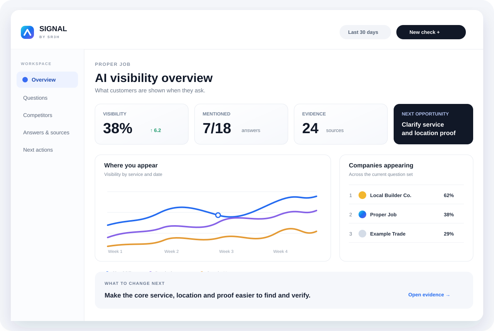

Test
Run defined questions in batches.
Keep the question and test conditions with each result so later runs can be compared.
Signal by SR3H · AI visibility and analytics
Signal is SR3H’s in-house AI visibility and analytics software. It runs repeatable batches of questions and brings the answers, cited sources and businesses mentioned together for analysis.

Inside Signal
We use Signal to investigate when AI answers a need itself, when it brings in an outside business, and how that business is presented. Repeating tests helps us compare results and assess whether changes are associated with better representation or more suitable recommendations.
The aim is to understand what affects an outcome and what is worth testing next, not simply to increase a mention count.
Test
Keep the question and test conditions with each result so later runs can be compared.
Record
Examine which businesses are named, how they are presented and what sources support the answer.
Compare
Compare repeated results and use the observations to choose the next test. A change in results alone does not establish what caused it.
Free website check
Check what your public website makes available to AI and search systems. Signal inspects access, page information and technical settings. When available, it also includes a small, dated sample of AI search results.
Website readiness and observed inclusion are reported separately.